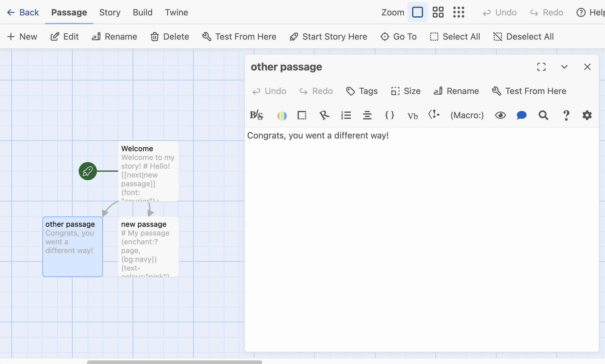

Twine Basics
About Twine
- Twine is an open-source tool for creating interactive fiction, text-based games, and hypertext narratives
- Twine has a no-code editor that uses simple markup, shows connections between passages as a network, and can be used in browser or as a standalone application
- Twine is designed to emphasize interactivity (user-input, randomness, variables) and choices
- Projects/games in Twine are called stories
How it works
Twine stories can be created and edited in-browser or in the Twine desktop app. (For the purposes of this workshop we’ll be using the browser version, though they are identical.) The WYSIWYG editor interface shows the entire site as a “web” divided into linked passages. Using some simple markup, you can change the formatting and style and add interactivity such as user input, randomness, and variables. You can export your twine game as a single HTML (Hypertext Markup Language) file and play it on your computer or publish it on any web server. What’s cool about it is that most no-code website builders do not allow you to include elements of functional programming (such creating conditional statements, assigning variables, and prompting user input). This combination of style, content, and functionality usually are handled by at least three separate languages (HTML for content and structure, CSS for style, and Javascript for functionality), but here they can all be customized using simple markup.
Story formats
Twine has several options for “story formats” – these not only change the visual style of the game, but they also change syntax and functionality. For this workshop, we’ll be using Harlowe, the default format, which is very beginner-friendly. If you’d like to experiment with other options in the future (Chapbook, SugarCube, and Snowman), I recommend finding documentation that is specific to that format.
Twine games are written in a specialized markup language called Twee and can also be edited in a text editor.
Getting started
- Navigate to https://twinery.org/
- Click ‘Use in your browser’
- In the top-left corner, click
+ Newto create a new story. Give yours a name. - Your new story should open in the Twine editor
The Twine editor

The main Twine editor has an overall “map” of your story showing all the connections between passages (currently, your story only has a single passage). The green rocket ship icon shows where the story begins.
A Passage in Twine is a discrete section of the story that will appear as a page on its own
You can double-click a passage to open up the WYSIWYG editor. Go ahead and add some text to your passage, and rename it using the Rename button in the passage editor.
On the top menu bar, click Test From Here to preview your game in a new tab.
Creating and editing passages
To create a new passage from the main story editor, you can use the + New button to create a disconnected passage. From the passage editor, you can simultaneously create and link to a new passage by using double square brackets: [[passage name]].
Any links you create this way will show up as arrows between passages in your overall game map. If you want to link to a new passage using link-text text other than the passage name, you can do so by separating the link text from the passage name with a pipe | like this: [[continue|passage name]]. Any passage that is not linked to another passage (or displayed by another passage; more on this later) will not appear when the game is played.
Markup and formatting
Twine uses a modified form of Markdown syntax to add basic structure or markup to your text.
Markup describes how data (in this case, plain text) is structured, displayed, and organized
You don’t need to understand all the rules of Markdown to edit in Twine, but here are some tips:
- Hash marks at the beginning of a line to create:
# Header 1and## Header 2 - Asterisks before and after text add emphasis
- A single asterisk
*before and after text to italicize:*italic* - Double asterisks
**before and after to bold text:**bold**
- A single asterisk
- Create an unordered list by adding a single asterisk followed by a space at the beginning of each line:
* List item - Create an ordered list with the numeral zero followed by a period and a space:
0. First item
* Item in my unordered list
* Another item in my unordered list
0. First ordered list item
0. Second list itemYou can also use the WYSIWYG editor for certain types of formatting.
Vocabulary
- Macro - In Twine, a bit of code used to change functionality or style of text, indicated with parentheses
- Hook - The passage of text that a macro acts on, indicated with square brackets
(font: "Arial")[This text will be in Arial.] - Variable - A container for values and words that can change within the game
(set: $myName to "Alice") Hello, $myName!
Tips for using Twine
- Preview/test your work often to make sure everything works as intended
- When using the browser editor, export your game every time you are finished
- To check your story format: from the story editor, select ‘Details’ and select ‘Harlowe 3.3.9’
- If you find a cool Twine game and want to know how they did that, right click on the page and go to ‘view page source’ to view the underlying code: you will see Twee code interspersed with HTML.
Your turn!
- If you haven’t already done so, go ahead and create a new “Story” and give it a unique title.
- Add at least 3 passages to your story. Practice creating links between them.
- Test out your game to see how it looks.
- Explore the buttons and options on the passage editor to see what else you can customize.